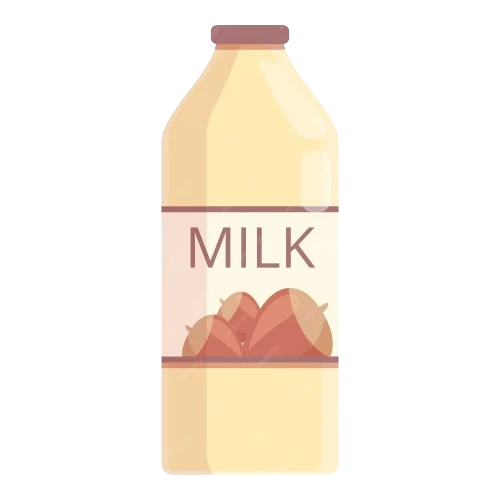

SUBSTITUIR ELS LACTIS? ÉS FÀCIL! 
Cada vegada hi ha més productes 100% vegetals a la nostra disposició per a substituir els productes d'origen animal! L'oferta d'alternatives vegetals s'expandeix contínuament, i les trobem cada vegada més fàcilment en supermercats i en botigues ecològiques o veganes.
Tenim llets vegetals, nates, margarines, iogurts i fins i tot formatges vegetals a la nostra disposició per a fer els plats que vulguem! Aquests productes permeten substituir fàcilment els lactis en moltíssimes receptes. Selecciona segons el teu gust, costum i pressupost.
La seva composició nutricional varia i pot ser molt diferent de la de la llet i els seus derivats, però no cal alertar-se: una alimentació vegetal variada ens aportarà tot el calci que el nostre cos necessita!
CALCI SENSE PRODUCTES LACTIS? 
No fa falta sofrir, és possible!
El calci, un nutrient indispensable per al creixement i la solidesa dels ossos, s'associa sovint als productes lactis. No obstant això, molts aliments d'origen vegetal també porten calci!
La majoria de llets i iogurts vegetals són enriquits amb calci a nivells equivalents als dels productes lactis. El tofu preparat a partir de sals de calci també és una bona font: 100g de tofu cobreixen aproximadament el 50% de les nostres necessitats diàries.
Les verdures verdes com els espinacs, el bròcoli, l'api o els fesols tendres són bons fonts de calci. Els altres aliments vegetals no són tan rics en calci però no obstant això aporten quantitats apreciables, sobretot la fruita seca, les taronges i els llegums.
Finalment, algunes aigües càlciques (Contrex, Rozana...) porten calci, a vegades fins a 500 mg/L, que s'absorbeix igual de bé que el dels aliments!
L'Organització Mundial de la Salut va establir ja fa molts anys que cal consumir un mínim de 525 mg de calci cada dia independentment de l'alimentació que tinguem: per sota d'aquest llindar, el risc de fractura augmenta. Bevent un got de llet de soia enriquit (200 ml) ja arribem pràcticament al 50% d'aquesta recomanació diària: no hi ha cap necessitat de consumir lactis per a tenir els ossos sòlids!
Per a una bona salut òssia, el calci ha d'anar acompanyat d'una quantitat adequada de vitamina D. Als nostres països temperats, el sol pot satisfer les nostres necessitats durant l'estiu. No obstant això, es recomana prendre suplements durant l'hivern, siguem vegans o no: la majoria de la població no arriba als nivells recomanats de vitamina D.
PER A TENIR EN L'ARMARI! üß∫
- Llet vegetal, ideal per a substituir la llet en qualsevol dels seus usos. Els gustos varien en funció de la marca: intenta-ho de diferents per a trobar la teva preferida. Algunes llets porten sucre afegit, a vegades sucre de canya o de suc de fruita, sobretot aquelles enriquides amb calci. Compte, la llet vegetal no pot substituir la llet materna per als bebès en edat de mamar.
- Nates vegetals: soia, arròs, civada, ametlla, coco... prova-les per a trobar la teva preferida! La nata de soia és la més multiusos i la més fàcil de trobar a les botigues i supermercats.
- Margarina o oli vegetal en lloc de mantega.

LES LLETS VEGETALS PODEN QUALLAR? 
La llet de soia, com la llet animal, qualla quan afegim vinagre o suc de llimona: basta barrejar 200ml de llet de soia amb 1 cullerada sopera de suc de llimona o vinagre, fer-la bullir i deixar-la reposar uns quants minuts. Es pot usar aquesta preparació per a diverses receptes, com per exemple formatges vegetals.
LLETS VEGETALS PER A TOTS ELS GUSTOS 
La llet de soia, molt estesa en supermercats, és la llet amb un sabor més variable en funció de la marca. Pot anar bé per a qualsevol recepta. Cal vigilar de prop quan es cou: pot vessar-se, igual que la llet de vaca!
La llet d'arròs té una textura bastant líquida i un sabor dolç. Normalment la trobem en combinació amb fruita seca o amb altres cereals: arròs-avellana, arròs-coco, arròs-quinoa, arròs-ametlla, etc., el que afegeix una mica d'untuositat a la seva textura.
El sabor gurmet de la llet d'ametlla o d'avellanes va perfecte per a fer postres. Són veritables delícies!
Hi ha moltes altres varietats de llets vegetals, a base de cereals (civada, mill, espelta, ordi, quinoa) o oleaginoses (castanya, coco, etc.). Cadascuna té les seves particularitats. Toca descobrir-les!
Les llets infantils, o llets maternitzades, són preparacions concebudes específicament per a les necessitats nutricionals dels bebès. Hi ha diverses versions vegetals, a base d'arròs, d'ametlla o de soia. Enriquides amb vitamines i minerals per a cobrir unes necessitats específiques, són equivalents a les llets infantils a base de llet de vaca. De la mateixa manera que donar llet de vaca no maternitzades a un bebè abans d'un any de vida seria perillós per a la seva salut, les llets vegetals no infantils tampoc estan adaptades.
Per a saber més sobre l'alimentació vegana dels bebès:
NATES VEGETALS I BEIXAMEL 
Algunes preparacions semblants a la nata líquida existeixen en forma de petits tetrabrics. En funció del tipus i de la marca, poden ser més o menys dolces i espesses i amb un sabor més o menys fort. Nata de soia, de coco, de civada, d'espelta, d'arròs, d'ametlla... descobreix-les en el teu supermercat o botiga ecològica o vegana.
La soia lactofermentada (no requereix cap producte lacti) o el tofu sedós triturat poden servir com a equivalent a la nata.
Quant a la beixamel, algunes marques ofereixen una preparació vegana que es pot usar per a coure al forn. La beixamel casolana a partir de llet de soia també és molt fàcil de fer.
Les cremes de fruita seca (ametlla, avellana, anacard, sèsam) són perfectes per a untar pa i donen un resultat cremós en usar-les per a cuinar: aporten sabor i untuositat a les sopes, salses, purés de patates i guarnicions de pastissos.
ALTERNATIVES A LA MANTEGA 
Les margarines, algunes de les quals són veganes, representen l'alternativa més simple per a la pastisseria. En funció de la recepta es pot usar altres greixos, com ara olis o cremes de fruita seca. És preferible usar olis que suportin la cocció i que tinguin un sabor neutre: olis de cacauet, de gira-sol o fins i tot d'oliva en algunes receptes.
Les cremes de fruita seca també són veritables mantegues vegetals, delicioses per a untar!

IOGURTS I CREMES DE POSTRES 
Podem trobar iogurts i cremes per a postres a base de soia, d'arròs o de cànem tant en grans superfícies com en botigues ecològiques. Hi ha iogurts naturals, de fruites, de xocolata, de vainilla, de festuc, de cafè, etc. La llet de soia també pot servir com a base per a fer iogurts casolans.
LA NATA MUNTADA A punt! 
Podem comprar nata muntada ja preparada en botigues veganes i en la majoria de botigues casher. Per a obtenir els millors resultats, igual que amb la recepta tradicional de nata muntada, hem de refrigerar el bol i la nata abans de batre la preparació amb un agitadors durant almenys 5 minuts. També podem batre la llet espessa de coco (la part més densa que trobem en la part de dalt quan deixem la llet de coco en la nevera i queda separada en dues parts) tal com la trobem.

FORMATGES SENSE CRUELTAT 
Les botigues especialitzades (veganes o ecològiques) ofereixen productes que s'assemblen a diferents tipus de formatge. Alguns, com els que s'assemblen a formatges frescos per a untar o formatges durs (en làmines), comencen a estar disponibles en els supermercats.
El llevat nutricional és una bona alternativa al formatge ratllat o en pols. En les salses, gratinats, pastes i patés vegetals, pot substituir sense problemes el sabor de formatge. El seu sabor pot variar en funció de la marca: no dubtis a provar uns quants per a trobar el teu favorit!
El tofu lactofermentado, molt saborós, té una textura semblant al fet. Podem menjar-ho directament o usar-ho per a cuinar (especiat i transformat en paté per a untar, en galledes marinades...). Ho podem trobar en botigues especialitzades.
Finalment, cada vegada més llibres de cuina vegana proposen receptes de formatges vegetals a base d'anacards, d'ametlles o de tofu. Internet, on podràs trobar diferents receptes i crítiques, continua sent una font privilegiada d'inspiració per als cuiners.

Basat en contingut original de L214